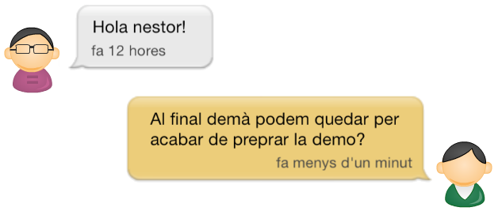

UPCnet uTalk
UPCnet uTalk
StreamUPC
Un nou concepte de col·laboració
Néstor Malet Montolío
Director
Jaume MoralRos
Co-Director
Albert ObiolsVives
Ponent
Josep CasanovasGarcia
Índex
Introducció

Premi Davyd Luque: UPCesfer@ 2008, Directori UPC 2009, U4U - University for you 2011
MAX: Motor d'activitat social

Gestió del projecte
Projecte: Metodologia

Scrum
Projecte: Scrum


Projecte: Abast

Projecte: Planificació

Projecte: Costos
Costos directes
| Recursos | Cost |
|---|---|
| Humans | 11.205 € |
| Materials | 56 € |
| Total | 11.261 € |
Cost total
| Costos | |
|---|---|
| Directes | 11.261 € |
| Indirectes | 788 € |
| Total | 12.049 € |
Projecte: Sostenibilitat, responsabilitat social i legislació
- Poc impacte medioambiental.
- Millora la comunicació i fomenta la col·laboració.
- Legislació:
- LOPD
- Mal ús del sistema
Especificació
Especificació: Històries d'usuari
9. Afegir una subscripció
Com a usuari registrat jo vull afegir noves subscripcions per a poder veure les activitats
publicades a un espai del que ara no estic subscrit.
Prioritat:65
Criteris d’acceptació:
- Vull afegir una nova subscripció a un context.
- No he de poder subscriurem a un context que no sigui públic.
- Se m’ha de confirmar si realment vull subscriurem al context.
- Si accepto, s’ha de crear la subscripció al context.
- Si cancel·lo, no s’ha de crear la subscripció.
Especificació: Model conceptual

Especificació: Requisits no funcionals
ReqNF. #:4
Nom:
Complir la App Review Guidelines
Descripció:
El producte s'ha d’adaptar a la guia de revisió d’aplicacions d'Apple (App Review Guidelines)
Arquitectura
Arquitectura: Disseny gràfic
Arquitectura: Presentació

Arquitectura: Domini
Arquitectura: Distribució de l'aplicació

Demostració
Conclusions
- S'han complert tots els objectius del projecte.
- La metodologia scrum ha ajudat a ...
- ... finalitzar un projecte inicialment poc definit.
- ... adaptar el projecte a les necessitats canviants del client.
- ... aconseguir un millor producte final.